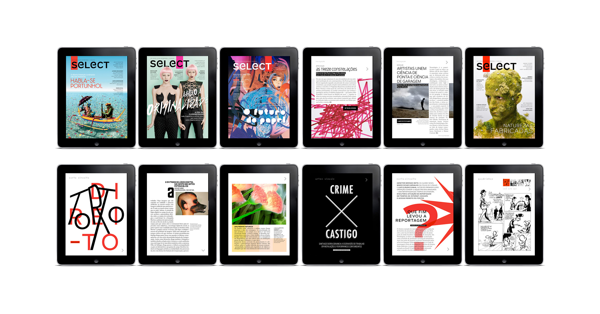
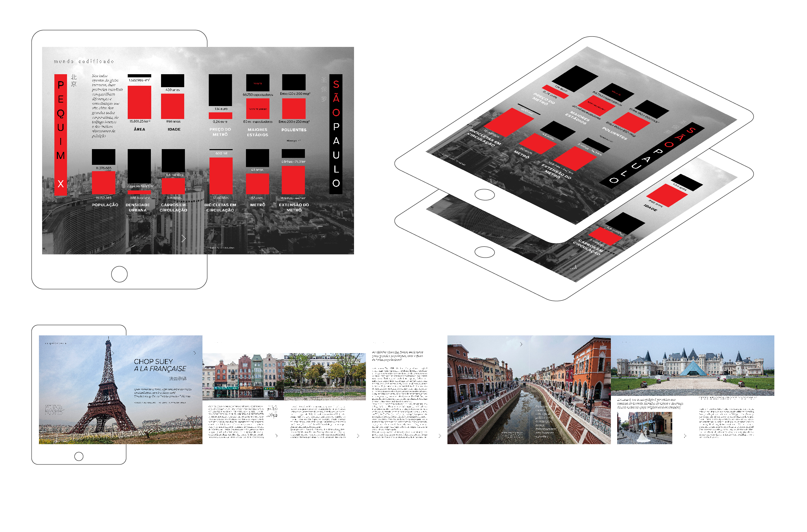
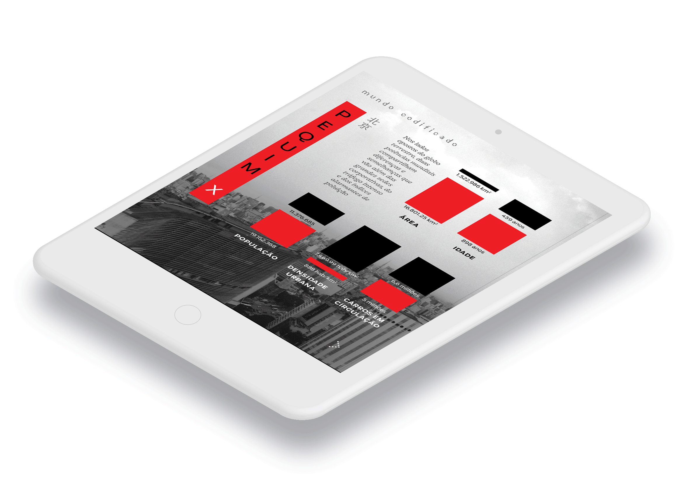
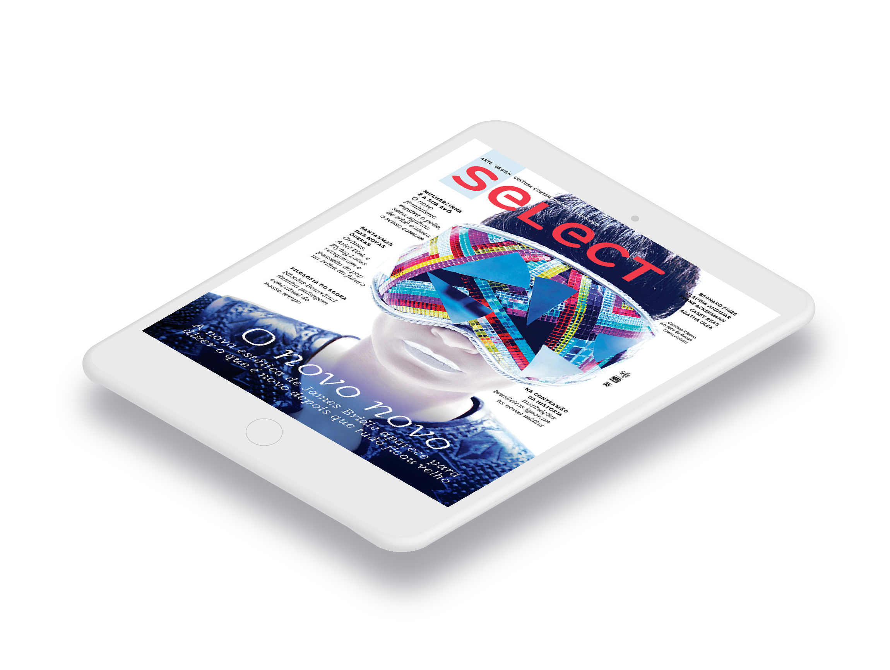

2014 a 2016
Editora 3
Meu trabalho neste projeto teve como foco transformar a publicação impressa em uma experiência editorial digital.
Minhas principais responsabilidades incluíam:
- Adaptar e recompor o conteúdo editorial para dispositivos digitais.
- Repensar a composição visual das páginas para telas menores.
- Preservar a identidade visual e editorial da revista.
- Transformar gráficos e elementos visuais em experiências interativas.
- Avaliar possibilidades de interação para enriquecer a leitura.
- Considerar aspectos de usabilidade, legibilidade e navegação.
- Adaptar o conteúdo às particularidades do ambiente digital.
- Acompanhar questões visuais e funcionais durante a produção de cada edição.
Tags do projeto:
Processo de design editorial e interação para tablet
Cenário
A Select era uma revista de comportamento, cultura e estilo com uma identidade editorial muito forte no papel: capas ousadas, diagramas apertados, infográficos, ensaios fotográficos e quadrinhos. Levar isso para o tablet não era digitalizar páginas — era descobrir como cada tipo de conteúdo poderia funcionar melhor na tela.
Objetivo
Manter a personalidade da revista (e a sensação de folhear) sem abrir mão de legibilidade, navegação e interação, com uma solução flexível o suficiente para acomodar o conteúdo de cada edição e consistente o suficiente para o leitor reconhecer a Select em qualquer tela.
Linha do tempo do projeto
-
01
Um acervo de formatos
Leitura das edições e mapeamento dos formatos — capas, reportagens, infográficos, ensaios e quadrinhos — e da identidade visual da revista.
-
02
Recompor, não reduzir
Análise página a página e remontagem de texto, imagem e gráficos para a tela, com hierarquia, tipografia e margens revistas.
-
03
Interação com propósito
Infográficos transformados em experiências exploráveis e ensaios fotográficos em tela cheia, com o texto como apoio.
-
04
Consistência entre edições
Padrões de página, navegação e componentes para manter a identidade entre edições e acompanhar a produção de cada número.
Um acervo de formatos
Uma edição da Select misturava capas, reportagens longas, moda, arte, fotografia e quadrinhos. Cada formato pedia uma decisão diferente de composição — e qualquer solução rígida quebraria na edição seguinte.
O primeiro passo era entender esse acervo: o que era texto corrido, o que era imagem, o que pedia leitura em sequência e o que pedia exploração. Foi desse mapa que saíram os padrões de página que usei nas edições seguintes.

Recompor, não reduzir
Reduzir a página impressa não funcionava: os textos ficavam longos demais, os infográficos perdiam legibilidade e as fotos perdiam impacto. Em vez disso, eu analisava cada composição e remontava para a tela, respeitando a hierarquia original.
O trabalho envolvia decisões de grid, tipografia e proporção entre texto e imagem. Estes foram os pontos que guiaram a recomposição:
- Reorganizar texto, imagens e elementos gráficos.
- Ajustar a tipografia para a leitura em tela.
- Revisar margens, espaçamentos e proporções.
- Preservar a identidade visual da publicação.
- Adaptar as composições aos diferentes formatos de tela.

Interação com propósito
Gráficos e infográficos estáticos ganharam camadas: o leitor podia tocar para revelar dados, comparar cidades e explorar séries. Ensaios fotográficos passaram a ocupar a tela inteira, com o texto como apoio, não como moldura.
A regra era interação com propósito: nada de animação decorativa. Cada recurso precisava ajudar a entender o conteúdo — um dado, uma comparação, uma sequência de fotos.


Consistência entre edições
A revista saía periodicamente, com conteúdo novo e uma equipe editorial própria. Para manter a identidade e a velocidade de produção, o projeto precisava de padrões: grades, estilos de página, componentes de navegação e um kit de interações que a equipe pudesse reaplicar.
O resultado é uma experiência que muda de conteúdo a cada edição, mas mantém a mesma lógica de leitura — e que o leitor reconhece como Select em qualquer tablet.

Aprendizados
O ambiente digital trouxe a possibilidade de transformar elementos gráficos tradicionais em experiências mais dinâmicas. Gráficos e infográficos que antes apresentavam toda a informação de forma estática passaram a oferecer interação, permitindo que o leitor explorasse certos dados de maneira mais ativa.
Aprendi que uma boa adaptação digital exige entender não só como uma interface funciona, mas também a natureza da informação apresentada. Preservar uma identidade visual não significa manter todas as decisões originais: muitas vezes é preciso desconstruir uma composição para reconstruí-la de forma mais adequada ao contexto de uso.
Também percebi que a interatividade só agrega valor quando existe um propósito claro por trás dela. Nem todo conteúdo precisa de animações ou elementos clicáveis; o mais importante é entender como a tecnologia pode facilitar a compreensão e enriquecer a experiência. Esse trabalho fortaleceu minha capacidade de conectar design, conteúdo e tecnologia, respeitando a essência de uma publicação enquanto explorava as possibilidades de um novo meio.